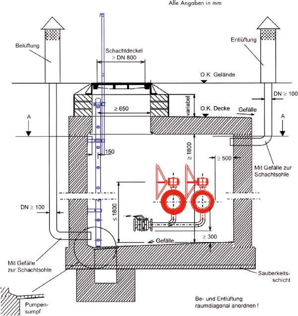
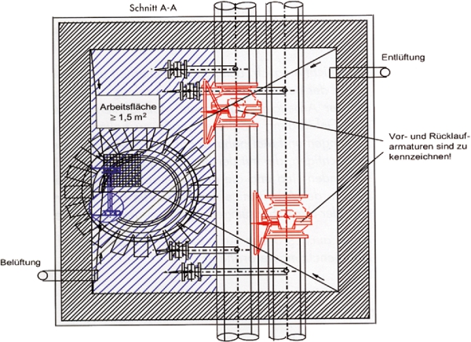

Im Sinne dieser Regel werden folgende Begriffe bestimmt:
Nicht begehbare Räume sind Räume, bei denen ein aufrechter Gang von Personen nicht möglich ist und die somit nur in gebückter oder kriechender Körperhaltung zu befahren sind. Sie gelten im Sinne dieser Regel nicht als Schächte oder Kanäle.
Siehe auch
| • | Unfallverhütungsvorschrift "Bauarbeiten" (BGV/GUV-V C22) (z.B. Abschnitt VIII. "Zusätzliche Bestimmungen für Arbeiten in Bohrungen" und Abschnitt IX. "Zusätzliche Bestimmungen für Arbeiten in Rohrleitungen") und |
| • | Regel "Arbeiten in Behältern, Silos und engen Räumen" (BGR 117-1). |
Allseits umschlossene Räume bedeutet, dass diese nur über Einsteigöffnungen begehbar sind. Bei Zugangsöffnungen, z.B. übliche Türen, gelten diese Räume als nicht allseits umschlossen.

Bild 3a: Beispielhafte Darstellung eines Fernwärmeschachtes (Längsschnitt)

Bild 3b: Beispielhafte Darstellung eines Fernwärmeschachtes (Querschnitt)